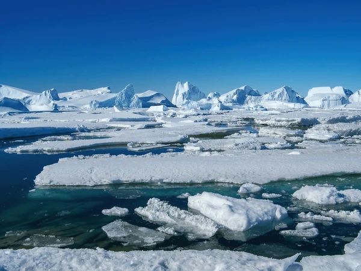

Polar Climate Characteristics
Temperature
Average: -49°C (-56°F)
Record low: -89.2°C (-128.6°F) at Vostok Station
Wind
Katabatic winds up to 320 km/h (200 mph)
Average wind speed: 37 km/h (23 mph)
Precipitation
Interior: <50 mm/year (polar desert)
Coast: 200-400 mm/year (mostly snow)
Seasonal Variations

Summer (Nov-Feb)
- 24-hour daylight
- Coastal temps: -5°C to +5°C (23°F to 41°F)
- Primary research season
Winter (Mar-Oct)
- 24-hour darkness
- Temps drop below -60°C (-76°F)
- Minimal personnel remain
Temperature Comparison
Climate Phenomena

Katabatic Winds
Gravity-driven winds flowing from high interior to coast

Diamond Dust
Ice crystals forming in clear air at very low temps
Ice Halos
Optical phenomena caused by ice crystals in the air